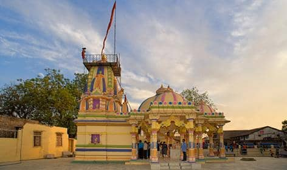

Welcome To Modasa...

Best Education City
Modasa is a town and a municipality in Aravalli district in the Indian state of Gujarat. Modasa was named after the Bhil chieftain Malaji Bhil, who ruled in Modasa during 1466.Modasa became headquarters of new Aravalli district, carved out from Sabarkantha. The new district was declared on 26 January 2013 and formed on 15 August 2013
It is an economic centre for agricultural exports, at both the provincial and national levels. As a centre for the surrounding villages, Modasa acts as a transportation hub for both residents and tourists, and has two large hospitals. The city also provides a nucleus of doctors for the people of northern Gujarat and some migrants of southern Rajasthan.
Modasa is emerging as an education centre for the area, with new pharmacy and engineering colleges and CBSE school supplementing the more traditional educational faculties. The city now has colleges of law, science, education, arts, commerce, and pharmacy, as well as business administration to MBA, BBA and BCA levels. Study courses run by the Government Engineering college include mechanical, computer, electronics and communication, civil engineering, electrical, and automotive engineering.
Famous Places in Modasa City
- Shamlaji Shirene
- Dev Ni Mori
- Kolikhad Khampa
- Aqualand Water Park
- Green Goat Farm
Modasa City Famous Food Item
- Batata Vada
- Kathi Vada
- Bateka Poha
- Fafda
© Copyright Reserved
Go To Main Page